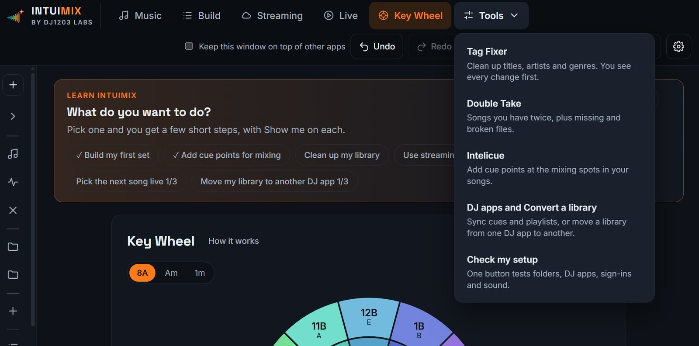

Intuimix beta
Download the beta
Always the newest build. You need a free beta key to use it. Once it's installed, Intuimix tells you when an update is ready and installs it for you. The beta is for adults 18 and older, and using it means you agree to the beta tester agreement.
What is Intuimix?
Intuimix is an intelligent DJ set creator for Windows and Mac. Tell it the night you want, or draw the energy you want on a graph, and it plans a set from the music you already own. Then it sends the set straight to your DJ app. You still play the set. Intuimix does the prep.
- Build a set from plain words ("start chill, build to a hype dancefloor") or by dragging the energy line
- See every song's BPM, key, energy and waveform, with the Key Wheel showing what mixes in key
- Intelicue adds cue points at the mix-in and mix-out spots for you
- Tag Fixer and Double Take clean up your tags and find duplicate files
- One click sends the set to rekordbox, Serato, Traktor, VirtualDJ, Engine DJ or djay Pro, without overwriting what's already there
Step 1: get your free beta key
Sign up in a minute and your key arrives by email. Each key works on 2 computers. Intuimix asks for it the first time it opens.
Get my beta keyStep 2: download Intuimix
Mac
Apple menu, About This Mac: Apple M1 or newer, or Intel.
Download for Mac (Apple chip) Download for Mac (Intel)See it in action
Real screens from the current beta, with a real DJ library: a four-hour, 55-track set.



Installing
Windows: open the downloaded file and Intuimix installs and opens by itself. It's signed by DJ1203 Labs. For the first few weeks Windows may still show "Windows protected your PC" to some people while it learns the new signature: click More info, then Run anyway.
Mac: open the downloaded file and drag Intuimix into Applications. It's signed and checked by Apple, so it opens normally.
Feedback
Found a bug or have an idea? Email hello@dj1203labs.com with what you were doing and what happened. Screenshots help. More answers on the help page.